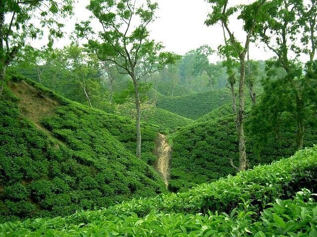
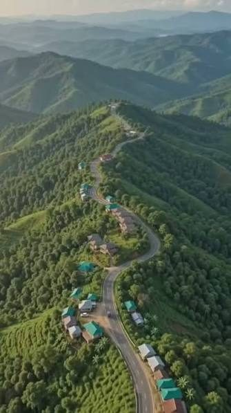

Bangladesh offers beaches, forests and hills within a few hours of each other. Pick your region below.
The best time to travel is between November and February when the weather is dry and cool. Read more on Wikipedia.

World's largest mangrove forest.

Long sandy beach with sunset views.

Green tea gardens and rolling hills.

Cloud-covered hills in Rangamati.